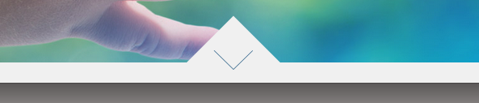
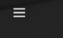

This project can seriously be turned into a long‐term tool. Utilizing inspirational screenshots, keeping notes of what works, what doesn't work, what was tried and failed, add pictures of own uses and variations. A sort of evolving log of code and components.
Those component images with the double red border are the one's chosen for the class project.
Examples of Landing Pages
Wistia Landing Page
Wistia
This is an example of a full‐image background landing page that is being widely used. Included as an extra, as a Landing Page in and of itself is NOT a component, but is made up of a series of components. It is beneficial in the design and development of a more simple and minimalistic design. The use of these with both the "hamburger" menu icon and/or the use of a bottom navigation bar is a nice beginning towards a minimalistic or simpler design. While not convinced video as a background is the way to go yet for a broad targeted audience the time is coming close when it could be used more mainstream. So for now, on the mainstream reliance should be on just an image rather than a video. This type landing page layout allows one to come up with more unique navigational methods. This is often the starting point for parallax scrolling, which needs to be used very carefully. In many viewers, the "fun" aspect of parallax can cause dizziness and vertigo and is completely not a good user experience. One site I am showcasing for some other components, uses parallax and when you use the navigation the pages fly by so fast it almost gives you a headache. Often these are bad uses of parallax and make for a bad user experience.
The font is clear and legible utilizing the font‐family: "Avenir", Futura, Helvetica, sans‐serif. The white font works well on the background. The navigation bar here looks nice, though it is rough in other places of the site as addressed later. It also offers two ways of navigating; one through the pie menu which is available everywhere and through the more detailed top bar. There is a definitive "what we are" written on the page and the video uses a bit of humour to engage the user as it goes through their features.
The target audience is the individual or company looking for a video hosting service.
This page now has the CSS sheet attached to it. Due to the nature of some of the components, it includes components that also are categorized within the Navigational Category for the purposes of showing in this class their appearance within context of the whole page. They are however broken out into their own component for individual use. -Added May 16, 2015.
This is a perfect corporate landing page. Beautiful picture, relevant phrase describing their philosophy and who they are, pie menu which will be shown further down the page. It's not cluttered and you know who they are when you land. Honestly the only thing slightly disliked about this site as a whole is the fact that it is an example of one of the parallax sites that utilize "windows" and in the fast scrolling it can be a bit visually disconcerting to a segment of users. The seedling is symbolic of their "building ahead to the future", as well as the adult hands reaching down to give to the toddler's hands. It also is in reference to the fact that it is a multi‐family office.
The target audience would be investor's looking for a reputable company to help manage their assets.
The blues of the icons and fonts play well with the background image. The font is a nice safe font utilizing the font‐family: "Helvetica Neue", Helvetica, Roboto, Arial, sans‐serif. The colors and imagery definitely help convey a feeling of strength, reliability and trustworthiness.
Jetsetter Landing Page
JetSetter ‐ Landing Page
This page actually makes it onto a few categories, the JetSetter website landing page is terrific. The page creates excitement when the user comes to it. It literally teems with life. From the image showcase that not only shows images of trending locations but the search box at the top of the image stays in sync with the image being shown so the user can go straight to what they are seeing without typing anything in themselves. Ingenius! The choice of font for the navigation bar as it seems a bit sophisticated yet fun. They used font‐family: 'Tenor Sans', "Helvetica Neue", Helvetica, Arial, sans‐serif here. The white font evokes a crisp clean sense of environment.
The target audience for this site would be those looking for a nice getaway and cost matters not.
Examples of Headers
Wistia Header
Wistia Header on Landing Page
Here we are again with Wistia. Unfortunately this company is not utilizing it consistently as will be shown in the following images. It also is very easy for the user to get lost when inside the the site. They have a few ways of navigating around between the pie menu, which is excellent as well as the top nav bar as mentioned above in the Landing Page site. The lack of breadcrumbs on the inner pages is a huge issue; nor is the nav bar consistently transitioned in a way that reflects the user's position within the pages.
As can be seen the top nav bar consists of two layers of Main Categories which then display the sub‐category options when the page changes, rather than having them within in a drop down. There are studies that show that users aren't that fond of drop boxes, especially as they get more and more complex, so this is a clear simple option and very a very viable option.
A view of the Wistia Pop Out Menu
Full Page Pop Out Menu
The "hamburger" opens up to a full page detailed, clear and concise menu options, with an easy close and very legible, leading the way to all areas of the site. However, is full‐page a bit of overkill? Perhaps so, the empty blue space to the right side is large though it is understandable if the desire is to not have it be a half‐page either. In this case it is a matter of personal opinion and tastes, in which case would fall to the client and their desires..
Another view of the Wistia Top Nav within the header
Wistia Header from the Products Page
The navigation from the products tab in the Header stays white, where elsewhere it changes color. This is inconsistent and can be confusing to the user. The interaction should always be the same, not to mention the fact that the white of the tab with the white of the bar with the white of the page, makes it hard to be clear whether or not you are on the page or somewhere else. The tab should change background color as do the other tabs when clicked, as well as the bar's appearance should alter. This workflow shows much promise and should allow for an enjoyable experience in seeing what can be done with this navigation scenario.
The login button turns stays white, the sign up button turns blue. This generally means the sign up is active. But it is not. It is the Products page that is active. This needs tweaked to a more consistent flow.
A view of the Mundial Pie Menu
Mundial Pop Out Menu
Here is the link to the html file for the component deconstruction Pop Out Menu Component - Updated May 19, 2015
This is the pop out menu from the Mundial Asset Management Group. This component has been integrated in with the above in the Mundial Landing Page. A site from earlier in the Landing Page Section. It is balanced, easy to read font of a legible size. The pop out uses short phrases, not a lot of clutter and readily accessible from where ever you are in the site. The color is part of the overall scheme and blends in well with the background image. The site overall is just lacking a trail of "where am I" visuals. The lack of trails and breadcrumbs is very noticeable as you get lost within the inside pages. The breadcrumbs could go down the side vertically much like the dots so that they are not intrusive upon the minimalist layout.
A view of the Jetsetter Header
JetSetter ‐ Navigation
There are various options that are given by this page to navigate around within the Header itself. There is the clearly marked search with check‐in and checkout options, that also sync up to the image showing on the hero at the time. You can also navigate to the day's top sales, each with gorgeous pictures and descriptions labeling them. Across the top you have a non‐intrusive navbar where you can book a trip or the deals or the other features that also are available as you scroll down the page. There is also not only the search on the darker bar at the hero level but there is another search at the top in the header above the register/login. Very smart as this is a normal location for people to look for search boxes within the header, so they not only went unique but also made sure that users who come to the site can find what they are looking for in the usual places.
Examples of CTA
A view of the Landing Course CTA
Landing Course 101 ‐CTA
This call to action very effectively implements the user of color and position. The orange color enables it to stand out in a very obvious manner, and the positioning within the center of the page draws the visitor's to it immediately. The Landing Page Course 101
The target audience would be those in the marketing field or looking to market their own small business.
A view of the BGIM CTA
Beginner's Guide ‐CTA>
Here is the link to the html file for the component deconstruction CTA Component - Updated May 19, 2015
The CTA on this page is more detailed. Encased between two lines, it boldly declares to help you attract and convert more customer's to your site. Along with that is a bright blue button asking "Show me how to attract new customers!" This will then take you to the form below to fill out. It is very visible and stands out clearly within the page.Beginner's Guide to Inbound Marketing
Again the target audience would be for those interested in learning more about marketing.
Examples of Features
A view of the Wistia Features
Wistia Features Page
This is the features page of the Wistia site. Despite the fact it is parallax it is a very interesting layout. There isn't any of the "window" type features that tend to bring on the dizziness feeling. It's all the same background and divided into three sections. These sections are one for each of the three different plans and goes into details for each. There is some fast scrolling which I might personally slow down a bit but with the solid background it is not that unpleasant. The only color differentiation in the background is that for the second plan they go from a white background to more of a grey which helps call it out as a different section, if you were to scroll through the page manually.
There is an effective use of animation and imagery throughout this page. It could fit under CTA as well, as there are calls to sign up for a free trial at the bottom of each sub‐page.
The Nav Bar for this page is positioned beneath the photograph up at the top of the page which when loaded would be the bottom of the visible page. With this navigation they are utilizing icons which to me is another example of ux inconsistency. The site as a whole has a definite issue with consistent user interactions and experience. However we are looking at components and so far as that goes, there are many of those that hold promise in so far as being utilized if in a bit of a different manner.
A view of the Jetsetter Features
JetSetter Features
Here is the link to the html file for the component deconstruction Features Component
This is another example of a decent parallax site. The detailed spread of their features is the captured in the way they have their features spread out down the page. It's not just a blase` list of features, but short sections with images and links to each one such as "Magazines", "What's Trending", and "Collections" This is included here as they do go into their features, but it was discussed up above so it will not be re‐iterated. The use of colors and fonts adds to the sophistication of the site. The colors are subdued, not overdone with the good contrast of dark and light. The overlay of text upon images changes style matching up to the image closely. This type of detail often goes unnoticed but definitely adds to the appeal.
Examples of About Us
A view of the Mundial About Us Component
Mundial About Us
Most noticeable here is that there is nothing fancy or pretentious about it. It simply states whom they are, what they do and gives a way of contacting them. It's nicely laid out and honestly, I wonder if we really need to go to a whole separate page or if we could just do this in a modal so that the user does not have to navigate off the page. It does have breadcrumbs there at the side, the small vertically aligned dots. This is a very professional looking site in my opinion.
It continues on with a nice use of font (the helvetica neu family) and typography, with a blend of colors to break up any monotony.
A view of the 8 hours About component.
About Us ‐ 8 hours
Here is the link to the HTML & CSS file for the component deconstruction About Component - Updated May 18, 2015
This About Us example is a terrific example of bringing a personal touch into the cold environment of company and business websites. It draws the user into it, rather than feeling like they are looking in through a cold window. The photographs are staged to be warm and familial. The center one positioned in front of a wall of family pictures, the dog in the third one, plus the warm tones of the images themselves. The font color of red is not too bold or garish in the fonts of which they use the Times New Roman family. The container with the background of grey upon the canvas of linen adds to the homestyle and personable charm of this site.
The target audience for this firm would be those in need of design or illustrating services.
Examples of Blog
A view of the 8 hours blog
8 Hour Blog
8 Hour Day smoothly carries over their color scheme, typography and purpose to their blog. They keep the entries relevant and of interest to those who would be coming to the site. As well, they stay in sync with the seasons and holiday times throughout the year. If a company is going to do a blog, they have to be consistent and keep it forthcoming, as well, they need to write articles that are relevant to the users who are coming to their site. A well‐written blog can be a great tool for increasing traffic flow and giving users a reason to return to your site even if they cannot use your services at the current time, it can help keep you in their sites for a time when they may need your services.
A view of the Hyken blog
Blog at Hyken.com
Here is the link to the html file for the component deconstruction Blog Component ‐ - Updated May 18, 2015
Hyken.com offers another excellent example of a blog being used to post relevant articles for the customers that relate to what the company and services are about. Each post is clearly defined so that one knows what it is about without having to go to the actual article, thus enabling browsing rather than back and forth clicking, giving the user the option whether to go or not. Another plus for this blog site is the fact that the ads are limited. Some blogs have so many ads on both sides of their main content that the look is so cluttered it is hard to focus upon their blog entries. Again, as 8 Hour Day does, the relevance is a huge tool in their arsenal for getting customer returns.
Excellent use of hierarchy and typography is seen within the layout of the blog entries.
The target audience for this site would be those trying to improve or create a customer service culture.
Examples of Contact forms
A view of the Mundial contact form
Mundial Contact Page
Here is the link to the HTML file for the component deconstruction Contact Component ‐ Form only - Updated May 19, 2015
This contact page with Google Map is laid out in a manner unseen before but definitely worth a place in the library. It has a nicely set up submission form but as well a wonderful map for those who need to know the physical location. Address and phone number are neatly displayed in the footer.
Examples of Login/Registration
A view of the Wistia Login and Registration Forms
Wistia Log in PageWistia Registration Page
The Log in Page is nicely formatted. Pretty routine and standard, same colors carried over from the site itself Many clients would like a social networking capability to log in as well. A modal for these components would be preferable to putting it on a separate page. Simple and effective.
The Registration page is the same as the Log In as it should be in a modal. The background actually has some patterns that look like they are clickable, but rather they are just part of the background image which is confusing. I do like the simplicity of their sign up process though. The initial sign up should be kept simple, details can be filled in within the account settings once the CTA has reeled them in and they actually have registered with the site.
A view of the Jetsetter Login and Registration Forms
JetSetter LoginJetSetter Register
Here is the link to the html file for the component deconstruction Login Component - Updated May 20, 2015
Here is the link to the html file for the component deconstruction Registration Component - Updated May 21, 2015
This set of log in and registration forms from the fore‐mentioned JetSetter site are another example of form layout that will be included in the library. The color scheme goes right along with the main site and are simple and effective and these also utilize the ability to utilize social networking in order to sign in. Gestalt Principles, hierarchy, effective grouping and use of whitespace lay these out perfectly.
Examples of Footers
A view of the Mundial footer
Mundial Footer
Here is the link to the html file for the component deconstruction Footer Component - Updated May 22, 2015
Footers are short and to the point, clear and concise. The footer is not the place for a complex navigational system. Users tend to not look down at the bottom for navigation options they are "trained" to look up at the top.
A view of the Mundial Footer on its Landing Page - Updated May 22, 2015

Mundial Footer Scroll Arrow
Here is the link to the html file for the component deconstruction Footer Component
This component does now have CSS attached to it.
Upon further analysis of this Landing Page, I realized that this in essence is the footer of this page. It is also it's own component as the Landing Page can be designed with or without it. It is a nice little way to scroll down to the next section/page. In this case it is the third alternative way of navigation within this page.
A view of the Wistia Footer
Wistia Footer
They didn't feel it necessary to give the footer its own color, it's part of the page. It has the key information thought to be required and allows the user to move on without feeling as if they are reading a historical novel. A nice example of a modest footer.
Examples of Unique Navigation
A view of the Mundial Off-Canvas Navigation - Updated May 15, 2015
CSS Built Hamburger/ pop out menu
Here is the link to the html file for the component deconstruction of the CSS for the hamburger itself Navicon CSS Component
This was tricky to categorize as one would think it is actually a <header> element, yet it is not. This component actually lives within the component of the background image/Landing Page itself. (This is assuming one would call a Landing Page a component, which technically it is not.) It is however a <nav> component and unique enough in the fact that it is not an image, but is built completely within the css stylesheet via the HTML element of <span>. This icon is animated and is done completely in CSS.
This is also viewable in full-context upon the Landing Page here.
A view of the Secondary Navigation Controls of Mundial - Updated May 15, 2015
It's not a header, it's not a footer, it's simply a <nav>. So here it is in all it's glory, a set of radio buttons that act as a secondary means of navigating throughout the site. Structurally they are positioned to the top left corner, however, via CSS translate it is moved out of the flow and positioned at the bottom right hand corner of the page. This component contains the same links as are stored within the pop-out menu navigation. It is its own component as it is not an essential part of the Landing Page upon which it was found. The site still functions on its own with other means of navigation. That makes this its own optional navigation component that can be utilized and manipulated to fit where one would like.
This is also viewable in full-context upon the Landing Page here..
A view of the Avideh Landing and Navigation

Avideh Landing PageAvideh Navigation
When the user uses the pie menu in the first picture, the navigation pops up in the middle of the page in a dynamically unique, yet simple manner. A unique and original navigation process. This is from the Avideh Marketing site.
Example of Gallery
A view of the Foto8 Gallery
Gallery at Foto8
Here is the link to the html file for the component deconstruction Gallery Component - Updated May 20, 2015
The Gallery on this page incorporates a slider along with individual snaps styled to look like rounded corner polaroids. The font style utilizes a bold style upon the first letter of each word. They are evenly spaced and display the works nicely.